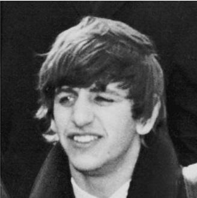

Ringo Starr
Bio
Richard Starkey, MBE (born 7 July 1940), better known by his stage name Ringo Starr, is an English drummer, singer, songwriter, producer, and actor who gained worldwide fame as the drummer for the Beatles. On most of the band's albums, he sang lead vocals for one song, including "With a Little Help from My Friends", "Yellow Submarine" and their cover of "Act Naturally". He also wrote the Beatles' songs "Don't Pass Me By" and "Octopus's Garden", and is credited as a co-writer of others, such as "What Goes On" and "Flying".
Starr was twice afflicted by life-threatening illnesses during his childhood, and as a result of prolonged hospitalisations, fell behind scholastically. In 1955, he entered the workforce and briefly held a position with British Rail before securing an apprenticeship at a Liverpool equipment manufacturer. Soon afterwards, he became interested in the UK skiffle craze, developing a fervent admiration for the genre. In 1957, he cofounded his first band, the Eddie Clayton Skiffle Group, which earned several prestigious local bookings before the fad succumbed to American rock and roll by early 1958.
When the Beatles formed in 1960, Starr was a member of another Liverpool group, Rory Storm and the Hurricanes. After achieving moderate success with that band in the UK and Hamburg, he quit the Hurricanes and joined the Beatles in August 1962, replacing Pete Best. Starr played key roles in The Beatles' films and appeared in numerous others. After the band's break-up in 1970, he released several successful singles including the US number four hit "It Don't Come Easy", and number ones "Photograph" and "You're Sixteen". In 1972, he released his most successful UK single, "Back Off Boogaloo", which peaked at number two. He achieved commercial and critical success with his 1973 album Ringo, which was a top ten release in both the UK and the US. He has been featured in a number of documentaries and hosted television shows. He also narrated the first two seasons of the children's television series Thomas & Friends and portrayed "Mr Conductor" during the first season of the PBS children's television series Shining Time Station. Since 1989, he has successfully toured with twelve variations of Ringo Starr & His All-Starr Band.
Starr's creative contribution to music has received praise from drummers such as Phil Collins, who described him as "a great musician", and Steve Smith, who commented: "Before Ringo, drum stars were measured by their soloing ability and virtuosity. Ringo's popularity brought forth a new paradigm ... we started to see the drummer as an equal participant in the compositional aspect ... His parts are so signature to the songs that you can listen to a Ringo drum part without the rest of the music and still identify the song." In 2011, Rolling Stone readers named Starr the fifth-greatest drummer of all time. Starr, who was previously inducted into the Rock and Roll Hall of Fame as a Beatle in 1988, was inducted for his solo career in 2015, making him one of 21 performers inducted more than once.